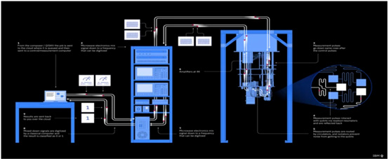
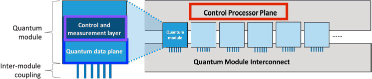
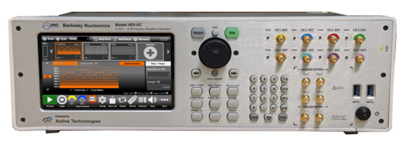

The most widely circulated photo of a quantum computer shows a structure that looks like a steampunk chandelier: tiers of golden vertical rods, looping metal cables, and a glittering core suspended in a frame. It is a striking image, and it is also slightly misleading. Almost none of that hardware is the computer. The gold-plated brass rods move heat and route cooling fluids. The dense bundle of cables carries microwave signals that command and read individual qubits. Most of the assembly is held under vacuum. All of it exists to protect and serve a single fragile chip about the size of a thumbnail at the very bottom of the structure.
That gap between the public image and the working reality is the subject of this chapter. A quantum computer is not one device. It is a layered system in which classical electronics, precision microwave engineering, cryogenics, and a small quantum processor all cooperate. Researchers describe this system using four abstract hardware layers, each with a distinct job and a distinct set of engineering challenges. Understanding the layers is the fastest way to understand what actually makes these machines hard to build, and where companies like Berkeley Nucleonics fit into the picture.
A note on scope before we begin. To date, small-scale machines are the norm. Quantum computers that scale to thousands or millions of high-quality qubits are still very much on the drawing board. The layered model below describes the architecture that a scalable machine must have, not a finished commercial product you can buy off a shelf.
The processor, the actual payload, is housed in a microchip-like package roughly one inch by three-quarters of an inch. It sits at the very bottom of the cryostat assembly, the coldest and most isolated point in the system. Everything above it is infrastructure.
Almost every quantum computer, regardless of the underlying qubit technology, can be decomposed into four abstract hardware layers:
The layers form a stack. The host processor sits at the top, closest to the user and farthest from the qubits. The quantum data plane sits at the bottom, deep inside the refrigerator. Information flows down the stack as instructions and back up the stack as measurement results. The diagram below shows how the lowest two layers nest inside a single quantum module, and how many such modules connect to a shared control processor plane through a module interconnect.
This modular view matters for scaling. A single chip can hold only so many qubits before wiring, crosstalk, and heat load become unmanageable. The path to large machines runs through many modules linked by an interconnect, each module governed by the same control processor plane. The sections that follow walk down the stack, one layer at a time.
The quantum data plane is the heart of the machine. It includes both the physical qubits and the structures necessary to hold them in place. It also contains the support circuitry needed to measure the state of the qubits and to perform gate operations on them. In a gate-based system, control signals routed to selected qubits drive individual gate operations. In an analog system, those signals shape the total energy of the system instead. For gate-based machines, the data plane provides a programmable "wiring" network that enables qubits to interact with one another.
That requirement, qubit-to-qubit interaction, sits in direct tension with another requirement, isolation. Achieving high qubit fidelity demands strong isolation from the environment, because any stray coupling to the outside world introduces error and shortens coherence. But strong isolation also limits connectivity. In practice, every qubit cannot interact directly with every other qubit. The computation has to be mapped onto the specific connectivity graph that the hardware provides, inserting extra operations to shuttle quantum information between qubits that are not directly coupled. Both operation fidelity and connectivity are therefore first-class metrics. A processor with many qubits but poor connectivity or low fidelity may be no more capable than a smaller, cleaner one.
Several numbers define the quality of this plane:
Control of the quantum data plane is performed externally, by the control and measurement plane described next. The control information is analog, and it must be delivered to the correct qubit or qubits. Transmission can be electrical, using wires, or it can use optical or microwave radiation. Whatever the medium, the signal must affect only the intended qubits without disturbing the others in the system. Coherence is the property a synthesized control signal must protect, and a low-phase-noise source helps preserve it. For RF signal generators with industry-leading coherence, see the Berkeley Nucleonics Model 865 family and the related application note on coherence (verify against the current datasheet at berkeleynucleonics.com).
The control and measurement plane is the translator that sits between digital intent and analog physics. Its job is to convert the control processor's digital signals, which indicate the quantum operations to be performed, into the analog control signals that actually drive the qubits in the data plane. It also runs in reverse: it converts the analog output of qubit measurements back into classical binary data.
Architecturally, this plane behaves much like a field programmable gate array (FPGA). It contains a large number of flexible logic blocks, each configurable to perform a logical function, with the programming of the data plane setting both the functions and the interconnections of the computation. The nature of the control signals depends entirely on the underlying qubit technology. Two common examples:
Generating and transmitting these signals is genuinely difficult, largely because of the error they can introduce. Signal crosstalk, for example, can cause small control signals to leak onto qubits that should not be addressed during a given operation. Shielding is hard too, because the control lines have to pass through the very barriers (vacuum, cooling, or both) that isolate the data plane from its environment. There is some good news in the physics: qubit manufacturing variations and crosstalk errors tend to change slowly with the mechanical configuration of the system. Their effects can be minimized by shaping the control pulses to reduce the qubit's sensitivity to these factors, and by periodic system calibration. How often calibration is required depends on the stability of both the quantum data plane and the control and measurement layer.

A point about speed is worth making here. With today's technology, the control and measurement plane is fast enough that gate speed is limited by the quantum data plane, not by the electronics. That said, a quantum computer can never run faster than the time needed to create the precise control signals that perform its operations. The signal source is on the critical path. For applications that demand it, the Berkeley Nucleonics Fast Control Port option on the Model 855, and the associated material on ultra-fast signal control and playback, address exactly this constraint (verify against the current datasheet at berkeleynucleonics.com).
If the control and measurement plane is the translator, the control processor plane is the conductor. It determines the sequence of operations and measurements that the algorithm requires, and it uses measurement outcomes to inform the operations that follow. Concretely, it identifies and triggers the proper sequence of quantum gate operations and measurements, which are then carried out by the control and measurement plane acting on the quantum data plane. Those sequences execute the program supplied by the host processor, turning a compiled quantum algorithm into a stream of timed hardware commands.
A major challenge for this layer is quantum error correction. Running an error-correction algorithm takes substantial classical information processing: the plane must read syndrome measurements, compute which corrective operations are needed, and issue them, all while the rest of the computation waits. This feedback loop can slow the whole machine down, and the larger the machine, the heavier the load.
Building a control processor plane for large quantum machines is one of the harder problems in the field. A common approach is to split the plane into two parts: a conventional classical processor that runs the quantum program at a high level, and scalable custom hardware that interfaces directly with the control and measurement plane. The custom hardware combines the high-level instructions issued by the main controller with incoming syndrome measurements to compute, in real time, the next operations to perform on the qubits. The difficulty is in making that custom hardware fast, scalable, and capable of supporting the right level of instruction abstraction. The control processor plane operates at a low level of abstraction, converting compiled code into commands for the control and measurement layer. Users never interact with it directly. They interact only with the host computer.

At the top of the stack sits a familiar machine: a classical computer running a conventional operating system. The host processor provides access to networks, large storage arrays, and user interfaces. It runs the operating system and the user-facing software, facilitates user interactions, and maintains a high-bandwidth connection to the control processor below it. It also accelerates the execution of some applications.
This arrangement is not exotic. It is the same architecture already in wide use for classical accelerators in graphics, machine learning, and networking, where a host CPU offloads specialized work to attached hardware. Those accelerators connect to the host through a high-bandwidth link, usually with shared access to part of the host's memory, and the quantum control stack attaches in much the same way. The host computing system supplies the software development tools and services needed to create applications that run on the control processor. Attaching a quantum processor to a classical computer in this way lets it inherit decades of mature classical infrastructure (file systems, networking, compilers, schedulers) instead of starting from scratch.
The practical takeaway is that a quantum computer is a hybrid system. The exotic physics lives at the bottom of the stack, but it is wrapped in conventional computing at the top. A user submits a job through familiar software. The host hands the program to the control processor plane. The control processor plane sequences it into hardware commands. The control and measurement plane turns those commands into microwave and electrical signals. The quantum data plane runs the physics and returns measurements that flow back up the stack.
It helps to ground the four-layer model in real instruments. A typical quantum computing setup includes an arbitrary waveform generator (AWG) together with several RF signal sources. The AWG is responsible for creating the waveforms that carry the data we want to send to the qubits. The signal begins as a baseband IQ (in-phase and quadrature) signal: two channels of the AWG feed into a mixer along with a local oscillator (LO) signal set at a fixed frequency. The LO can come from a separate high-stability, low-noise signal source, or from an AWG capable of RF output directly.
The mixed RF signal is fed into a dilution refrigerator, where it acts on the qubits. When a qubit is measured, it is removed from its superposition state and collapses to a definite 1 or 0. That measurement result is reflected back out through the dilution refrigerator via a chain of amplifiers and isolators that protect the integrity of the signal as it travels from the cold stage to room temperature. Once the return signal arrives, it is down-converted from microwave back into a digital signal using a mixer and the same LO frequency that was used to mix it on the way in.
That is the basic working cycle of a quantum computing system. There are additional signals in play, such as a control DC pulse from the AWG that feeds the qubit system and is also returned as a digital control signal. The LO signals can be produced by any low-noise, phase-coherent signal source or synthesizer, which is precisely where signal-generation quality determines machine quality.

In typical setups, the LO and control roles are filled by low-noise synthesizers such as the Berkeley Nucleonics Model 855B and the Model 865-M or 865-M-X, while the AWG functionality is provided by the Model 875, which is well suited to performing quantum operations (verify all model references against the current datasheets at berkeleynucleonics.com).
Hardware for quantum systems is a fast-growing area of private industry, government, academia, and startup activity. All of that activity converges on a single goal: an integrated, effective approach to controlling qubits. The four-layer model is the map. Precise, low-noise, phase-coherent signal generation is one of the territories on that map where the engineering is won or lost.
Going Deeper - Why the signal source sits on the critical path
Section 5.3 noted that a quantum computer can never run faster than the time needed to create its control signals. The deeper reason is fidelity. A gate is performed by a carefully shaped pulse, and any phase noise, timing jitter, or amplitude error in that pulse maps directly onto a gate error. As qubit coherence times improve, the bottleneck shifts toward how cleanly and quickly the electronics can synthesize the next pulse. This is why coherence and phase noise, properties of the signal source rather than the qubit alone, are quoted alongside qubit counts when machines are compared.
BNC in Practice - Signal generation for the control stack
The control and measurement plane is built from instruments that synthesize and digitize microwave and RF signals. Berkeley Nucleonics positions its low-phase-noise synthesizers and arbitrary waveform generators for exactly this role: generating qubit drive and readout waveforms, and supplying the phase-coherent local-oscillator signals used for up- and down-conversion. Specific model fit depends on the qubit technology and the experiment. Treat any model number or specification here as a starting point and confirm it against the current published datasheet before designing it into a system.
Take it interactively. The quiz lives on its own page with hidden answers - write your attempt first (even four characters works), then reveal. Self-graded. About 10 minutes.
Or read the questions and answers inline below (preserved for print and offline use).
[1] Berkeley Nucleonics Corporation. "Model 865 Family RF/Microwave Signal Generators" and "Application Note on Coherence." berkeleynucleonics.com. Verify before publication.
[2] Berkeley Nucleonics Corporation. "Model 855 Signal Generator, Fast Control Port Option." berkeleynucleonics.com. Verify before publication.
[3] Berkeley Nucleonics Corporation. "Model 855B, Model 865-M / 865-M-X Synthesizers, and Model 875 Arbitrary Waveform Generator." berkeleynucleonics.com. Verify before publication.
[4] M. Mohseni et al., "Commercialize quantum technologies in five years," Nature, vol. 543, 2017, on the layered architecture of quantum computing systems. Verify before publication.
[5] National Academies of Sciences, Engineering, and Medicine, "Quantum Computing: Progress and Prospects," 2019, for the four-plane hardware decomposition. Verify before publication.